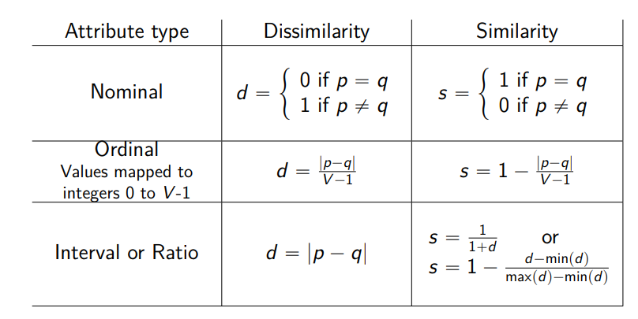

Similarity and dissimilarity
Similarity
A numerical value of how-alike data object are with value between 0 and 1 with 1 completely identical, 0 totally different.
Dissimilarity
Opposite of similarity
Computation

Euclidean distance
with a standardization / regularization process for different scaled dimensions.
Minkowski distance
Is the p-norm .
Mahalanobis distance
The mahalanobis distance decreses if, keeping the same Euclidean distance, the segment is streched along the direction of grater variation of data. The distribution is described by the Covariance matrix of th dataset
Covariance matrix
- Measure the variation of pairs of random variables
- The summation is over all the observation
- The main diagonal contain the variance
- The value is positive if two variables grow together
- A diagonal matrix means that the variables are non-correlated
- The diagonal contains ones if the variables are standardized
vector similarity
- the number of attributes where both p and q have zeros
- the number of attributes where the first is 0 and the second 1
- he number of attributes where the first is 1 and the second 0
- the number of attributes where both p and q have 1
Simple matching coefficent
Jaccard coefficient
Cosine similarity
Extended Jaccard coefficent
[imgs/Statistical and Mathematical Methods for Artificial Intelligence/Statistics/Correlation](imgs/Statistical and Mathematical Methods for Artificial Intelligence/Statistics/Correlation)
Correlation in Nominal data type
Where H is the entropy and H(,) is the joint entropy computed from the joint probabilities